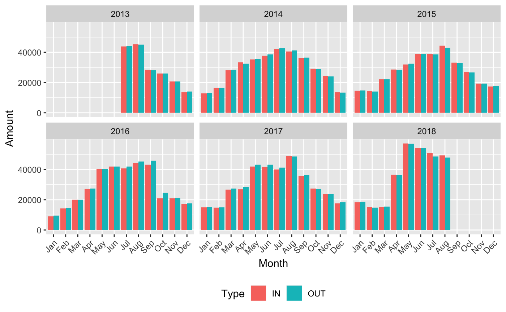

vignettes/Example_Rostock.Rmd
Example_Rostock.RmdRostock <- c(100037011, 100005392, 100037010, 100034887, 100017341, 100005395, 100005394, 100005393,
100011605, 100037012)## id name nameId
## 1 101037011 nach Markgrafenheide Z_101037011
## 2 102037011 von Markgrafenheide Z_102037011
## 3 101037010 nach Hinrichshagen Z_101037010
## 4 102037010 von Hinrichshagen Z_102037010
## 5 101034887 Fahrrad Fußweg IN Z_IN_101034887
## 6 102034887 Fahrrad Fußweg OUT Z_OUT_102034887
## 7 103034887 Fahrrad Straße IN Z_IN_103034887
## 8 104034887 Fahrrad Straße OUT Z_OUT_104034887
## 9 105034887 Auto IN Z_IN_105034887
## 10 106034887 Auto OUT Z_OUT_106034887
## 11 101017341 Zelt 01_IN Z_IN_101017341
## 12 102017341 Zelt 01_OUT Z_OUT_102017341
## 13 101005395 Am Strande_IN Cycles_04_IN_129756
## 14 102005395 Am Strande_OUT Cycles_04_OUT_129757
## 15 101011605 Mühlendamm-Flußbad_IN Z_IN_101011605
## 16 102011605 Mühlendamm-Flußbad_OUT Z_OUT_102011605
## 17 101037012 nach Graal-Müritz Z_101037012
## 18 102037012 von Graal-Müritz Z_102037012
## description
## 1
## 2
## 3
## 4
## 5
## 6
## 7
## 8
## 9
## 10
## 11
## 12
## 13 Barometer installiert 20.06.2013 Wartung 20.06.2013 Eco-Combo am 01.07.14 gewechselt Wartung 16.09.2014 Wartung 15.10.2015
## 14 Barometer installiert 20.06.2013 Wartung 20.06.2013 Eco-Combo am 01.07.14 gewechselt Wartung 16.09.2014 Wartung 15.10.2015
## 15 Wartung 16.09.2014 Wartung 15.10.2015
## 16 Wartung 16.09.2014 Wartung 15.10.2015
## 17
## 18
## serial gsm userType userTypeHard latitude longitude photo
## 1 2 0 54.19103 12.18095 NULL
## 2 2 0 54.19103 12.18095 NULL
## 3 2 0 54.19088 12.18219 NULL
## 4 2 0 54.19088 12.18219 NULL
## 5 Y2G13114770 0644345614 2 2 54.08197 12.11401 NULL
## 6 Y2G13114770 0644345614 2 2 54.08197 12.11401 NULL
## 7 Y2G13114770 0644345614 2 2 54.08197 12.11401 NULL
## 8 Y2G13114770 0644345614 2 2 54.08197 12.11401 NULL
## 9 Y2G13114770 0644345614 4 4 54.08197 12.11401 NULL
## 10 Y2G13114770 0644345614 4 4 54.08197 12.11401 NULL
## 11 Y2G13094295 +33671374123 2 2 54.17666 12.05803 NULL
## 12 Y2G13094295 +33671374123 2 2 54.17666 12.05803 NULL
## 13 YTG14065931 0754626404 2 2 54.09152 12.14942 NULL
## 14 YTG14065931 0754626404 2 2 54.09152 12.14942 NULL
## 15 Y2G13114769 0644345631 2 2 54.08378 12.15311 NULL
## 16 Y2G13114769 0644345631 2 2 54.08378 12.15311 NULL
## 17 2 0 54.19105 12.18174 NULL
## 18 2 0 54.19105 12.18174 NULL
## timezone domain lastGSM isGSM
## 1 (UTC+01:00) Europe/Paris;DST Hansestadt Rostock -2.208992e+12 0
## 2 (UTC+01:00) Europe/Paris;DST Hansestadt Rostock -2.208992e+12 0
## 3 (UTC+01:00) Europe/Paris;DST Hansestadt Rostock -2.208992e+12 0
## 4 (UTC+01:00) Europe/Paris;DST Hansestadt Rostock -2.208992e+12 0
## 5 (UTC+01:00) Europe/Paris;DST Hansestadt Rostock 1.536980e+12 0
## 6 (UTC+01:00) Europe/Paris;DST Hansestadt Rostock 1.536980e+12 0
## 7 (UTC+01:00) Europe/Paris;DST Hansestadt Rostock 1.536980e+12 0
## 8 (UTC+01:00) Europe/Paris;DST Hansestadt Rostock 1.536980e+12 0
## 9 (UTC+01:00) Europe/Paris;DST Hansestadt Rostock 1.536980e+12 0
## 10 (UTC+01:00) Europe/Paris;DST Hansestadt Rostock 1.536980e+12 0
## 11 (UTC+01:00) Europe/Paris;DST Hansestadt Rostock 1.536980e+12 0
## 12 (UTC+01:00) Europe/Paris;DST Hansestadt Rostock 1.536980e+12 0
## 13 (UTC+01:00) Europe/Paris;DST Hansestadt Rostock 1.536980e+12 0
## 14 (UTC+01:00) Europe/Paris;DST Hansestadt Rostock 1.536980e+12 0
## 15 (UTC+01:00) Europe/Paris;DST Hansestadt Rostock 1.536980e+12 0
## 16 (UTC+01:00) Europe/Paris;DST Hansestadt Rostock 1.536980e+12 0
## 17 (UTC+01:00) Europe/Paris;DST Hansestadt Rostock -2.208992e+12 0
## 18 (UTC+01:00) Europe/Paris;DST Hansestadt Rostock -2.208992e+12 0
## organisme interval install soft hard sens channel idParent etat
## 1 888 15 -2.208992e+12 1 1 100037011 0
## 2 888 15 -2.208992e+12 2 2 100037011 0
## 3 888 15 -2.208992e+12 1 1 100037010 0
## 4 888 15 -2.208992e+12 2 2 100037010 0
## 5 888 15 1.386112e+12 2.9xi 1 1 100034887 0
## 6 888 15 1.386112e+12 2.9xi 2 2 100034887 0
## 7 888 15 1.386112e+12 2.9xi 1 3 100034887 0
## 8 888 15 1.386112e+12 2.9xi 2 4 100034887 0
## 9 888 15 1.386112e+12 2.9xi 1 5 100034887 0
## 10 888 15 1.386112e+12 2.9xi 2 6 100034887 0
## 11 888 15 1.416870e+12 05.07 1 1 100017341 0
## 12 888 15 1.416870e+12 05.07 2 2 100017341 0
## 13 888 15 1.349042e+12 04.15 1 1 100005395 0
## 14 888 15 1.349042e+12 04.15 2 2 100005395 0
## 15 888 15 1.386025e+12 2.9xi 1 1 100011605 0
## 16 888 15 1.386025e+12 2.9xi 2 2 100011605 0
## 17 888 15 -2.208992e+12 1 1 100037012 0
## 18 888 15 -2.208992e+12 2 2 100037012 0
## numPratique ownerId dateActivation formuleSite filtre idPdcImg firstGSM
## 1 1 888 NA 0 0 0 NA
## 2 2 888 NA 0 0 0 NA
## 3 1 888 NA 0 0 0 NA
## 4 2 888 NA 0 0 0 NA
## 5 1 888 NA 0 0 0 NA
## 6 1 888 NA 0 0 0 NA
## 7 2 888 NA 0 0 0 NA
## 8 2 888 NA 0 0 0 NA
## 9 3 888 NA 0 0 0 NA
## 10 3 888 NA 0 0 0 NA
## 11 1 888 NA 0 0 0 NA
## 12 1 888 NA 0 0 0 NA
## 13 1 888 NA 0 0 0 NA
## 14 1 888 NA 0 0 0 NA
## 15 1 888 NA 0 0 0 NA
## 16 1 888 NA 0 0 0 NA
## 17 1 888 NA 0 0 0 NA
## 18 2 888 NA 0 0 0 NA
## weather_station_id date
## 1 0 <NA>
## 2 0 <NA>
## 3 0 <NA>
## 4 0 <NA>
## 5 0 <NA>
## 6 0 <NA>
## 7 0 <NA>
## 8 0 <NA>
## 9 0 <NA>
## 10 0 <NA>
## 11 0 <NA>
## 12 0 <NA>
## 13 35 <NA>
## 14 35 <NA>
## 15 35 <NA>
## 16 35 <NA>
## 17 0 <NA>
## 18 0 <NA>Am_Strande_IN_complete <- get_EcoCounter_data(101005395, from = "20130701", to = "20180831", step = 6) %>%
mutate(Type = "IN")
Am_Strande_OUT_complete <- get_EcoCounter_data(102005395, from = "20130701", to = "20180831", step = 6) %>%
mutate(Type = "OUT")
Am_Strande_complete <- bind_rows(Am_Strande_IN_complete, Am_Strande_OUT_complete) ## Warning in bind_rows_(x, .id): Unequal factor levels: coercing to character## Warning in bind_rows_(x, .id): binding character and factor vector,
## coercing into character vector
## Warning in bind_rows_(x, .id): binding character and factor vector,
## coercing into character vectorAm_Strande_monthly <-
Am_Strande_complete %>%
mutate(weekday = wday(date, label = TRUE),
year = year(date),
month = month(date, label = TRUE)) %>%
na.omit()
ggplot(Am_Strande_monthly, aes(x = month, y = comptage, fill = Type)) +
geom_bar(stat = "identity", position = "dodge") +
facet_wrap(~year) +
theme(legend.position = "bottom",
axis.text.x = element_text(angle = 45, hjust = 1)) +
xlab("Month") +
ylab("Amount")
Am_Strande_OUT_detail <- get_EcoCounter_data(102005395, from = "20160701", step = 3)
Am_Strande_OUT_detail %>%
top_n(10, comptage) %>%
arrange(desc(comptage))## date comptage id
## 1 2018-06-28 18:00:00 961 102005395
## 2 2018-06-28 17:00:00 524 102005395
## 3 2017-12-14 12:00:00 401 102005395
## 4 2017-12-13 13:00:00 392 102005395
## 5 2017-12-14 11:00:00 342 102005395
## 6 2017-08-07 21:00:00 316 102005395
## 7 2018-05-07 17:00:00 306 102005395
## 8 2018-05-08 16:00:00 286 102005395
## 9 2017-08-16 14:00:00 283 102005395
## 10 2018-05-23 17:00:00 275 102005395